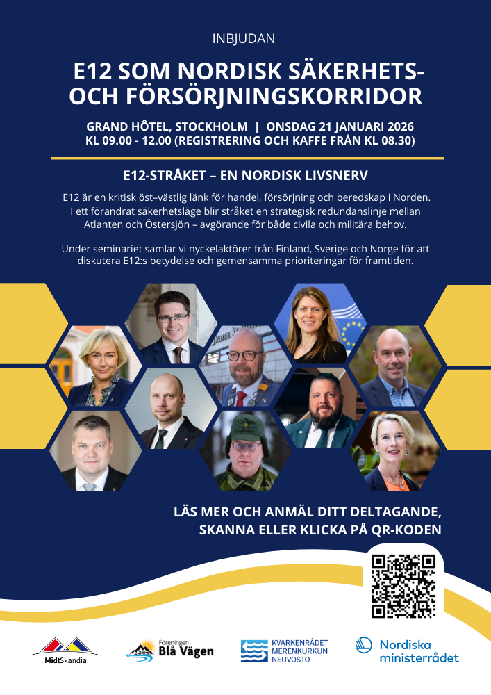
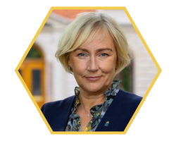
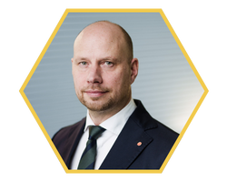
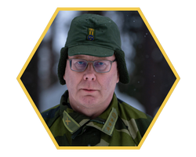
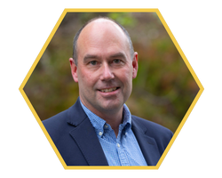
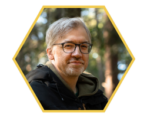
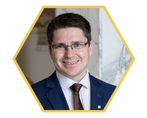
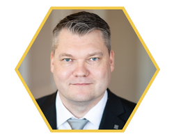
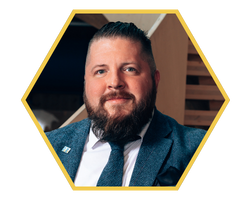
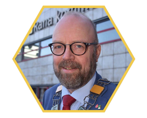

En kritisk öst-västlig korridor för handel, försörjning och beredskap – nyckelaktörer från Finland, Sverige och Norge möts i Stockholm.
Anmäl dig här →









Anmälan sker via formuläret nedan. Platser är begränsade.
Öppna anmälningsformulär →